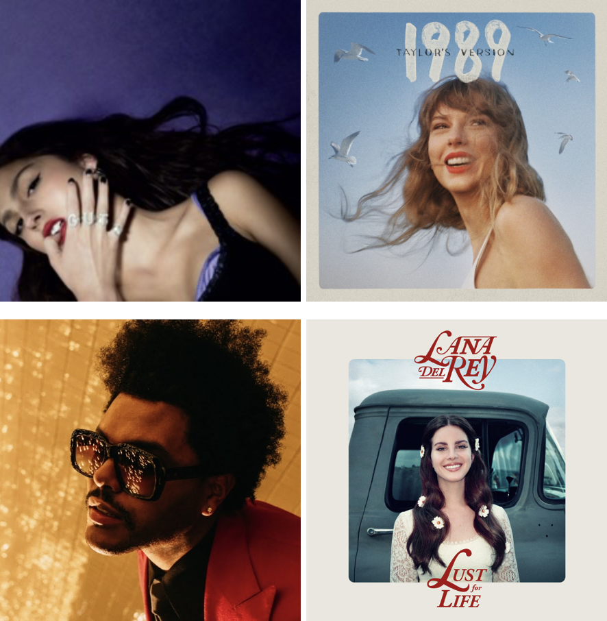

Shafter High School
August 2018 - June 2022

I graduated from Shafter High School in 2022 and was recognized as a California Scholarship Federation (CSF)
recipient and awarded the "Stringham Memorial Award for Scholastic Excellence" for earning the 3rd highest
GPA (4.389) out of the 384 students in my graduating class. During my time in high school, I did Cross Country and
Track and Field for four years, played Soccer for two years, participated in Key club and Relay for Life for two
years, involved in the Project Lead the Way (PLTW) Engineering program for 3 years, officer for the Associated
Student Body (ASB) as the "Commissioner of Boys' Athletics" for two years, and I was President of the Cross Country
and Track and Field team my senior year.
University
September 2022 - Present

In the fall of 2021, I applied to 12 universities and was accepted into 8, including prestigious institutions such as
UCLA, UC Berkeley, UC San Diego, and UC Santa Barbara, as well as Cal Poly San Luis Obispo, Cal Poly Pomona, Fresno State,
and CSU Bakersfield. Ultimately, I chose to attend UCLA, committing to major in Computer Science
and Engineering. The program's highly competitive, with only 117 students having been admitted out of 3,748 applicants,
resulting in a 3.1% acceptance rate. Given UCLA's overall applicant pool of 174,745 for fall admission in 2022,
the largest applicant pool in college history, being accepted into such an elite program and institution
was a significant achievement that aligned perfectly with my aspirations.

My main hobby involves running, playing football (soccer), website-development, traveling, listening to music, and hanging out with friends. I average 60 miles a week of running and I'm currently just trying to maintain my physique for the upcoming track season in the Winter and Spring. For sports I live, breathe, and die football (soccer) and it's pretty much the only sport I watch on a daily basis. I'm a huge Barcelona, Argentina, and Messi fan and can talk all day long about it. I like to go exploring around LA and occassionally do this when I go out for a run and plan ahead scenic routes to make the run more enjoyable. I spend most of my time exploring Beverly Hills, Westwood, and Santa Monica. My goal is to eventually end up living in LA or New York after I graduate.

I worked at McDonald's in Shafter from July 2020 to August 2022 because of the C0VID-19 pandemic. Since I had nothing to do at the time because of quarantine I thought working would be a new learning experience going into the real world. Honestly, working at McDonald's was both a fun and humbling experience. I met some of the most genuine hard-working people during my time there and grown into a more well-rounded and open-minded person because of my time working. My main role was working in the kitchen but overtime as I became more experienced I was able to evolve and adapt to taking upon other responsibilities such as taking drive-through orders and doing maintence work. (I'm going to be honest, there are some moments where even today I kind've wish I was still working there.)

Currently at UCLA, I'm part of SOLES (the Society of Latinx Engineers and Scientists), the CEED (Center for Excellence in Engineering and Diversity) program, and run for the UCLA Club Track and Field team. Most of my friends from school are SOLES members and we spend most of our time in the CEED Center studying (procrastinating). For track, we have practice Tuesday through Thursday from 6pm - 7:30pm and distance runners have practice on Sunday from 9am - 10:30am occassionally. We have multiple races throughout the year and have many opportunities to travel and go up against highly competitive athletes across the area. There are many other great clubs on campus but these clubs are the ones that make me feel at home the most.

I like listening mostly to pop artists and according to Apple Music my top artists this year are Olivia Rodrigo, Taylor Swift, the Weeknd, and Lana Del Rey.